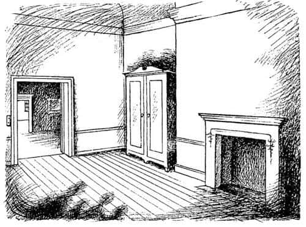
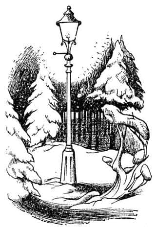

Lucy Dolaba Bakıyor
Bir zamanlar, isimleri Peter, Susan, Edmund ve Lucy olan dört çocuk vardı. Bu hikâye, savaş sırasında hava saldırıları yüzünden Londra’dan uzağa gönderildiklerinde, onların başına gelen bir şey hakkındadır. Çocuklar, kırsal bir bölgede en yakın tren istasyonundan on beş kilometre ve en yakın postaneden üç kilometre uzakta olan yaşlı bir profesörün evine gönderilmişlerdi. Profesör evli değildi ve kâhyası Bayan Macready ve (isimleri Ivy, Margaret ve Betty olan, ama hikâyede fazla rolleri olmayan) üç hizmetçi ile birlikte çok büyük bir evde yaşıyordu. Profesör, neredeyse bütün yüzünü kaplamış dağınık beyaz saçları olan çok yaşlı bir adamdı ve çocuklar onu hemen sevmişlerdi; ama ilk akşam onları kapıda karşılamaya geldiğinde öyle tuhaf görünüyordu ki Lucy (en küçükleriydi) ondan korkmuş ve Edmund (ikinci küçükleriydi) gülmek istemişti, ama belli etmemek için sümkürür gibi davranmak zorunda kalmıştı.
İlk gece, Profesör’e iyi geceler deyip yukarı kata çıktıktan sonra oğlanlar kızların odasına geldiler ve birlikte etrafı gözden geçirmeye başladılar.
“Kuşkusuz dört ayak üzerine düştük” dedi Peter. “Her şey çok harika olacak. İhtiyar her istediğimizi yapmamıza izin verecek.”
“Çok sevimli bir ihtiyar” dedi Susan.
Yorgun olan, yorgun olunca da huysuzlaşan, ancak bunu belli etmemeye çalışan Edmund “Saçmalama” dedi. “Böyle konuşma.”
“Nasıl yani?” dedi Susan; “her neyse, senin yatağa gitme zamanın.”
“Annem gibi konuşuyorsun” dedi Edmund. “Ve sen kimsin ki bana yatmamı söylüyorsun. Git kendin yat.”
“Hepimiz yatsak iyi olmaz mı?” dedi Lucy. “Burada konuştuğumuzu duyarlarsa patırtı çıkar.”
“Bir şey olmaz” dedi Peter. “Burası öyle bir ev ki, ne yaparsak yapalım kimse bir şey demez. Her neyse, bizi duymazlar zaten. Burada o kadar çok koridor ve merdiven var ki, yemek odasına gitmek bile on dakika sürüyor.”
“Bu ses de ne?” dedi Lucy aniden. Burası, şimdiye kadar gördüklerinden çok daha büyük bir evdi; uzun koridorlar ve boş odalara açılan sıra sıra kapılar onu ürpertmeye başlamıştı.
“Sadece bir kuş, sersem” dedi Edmund.
“Baykuş” dedi Peter. “Burası kuşlar için harika bir yer. Ben şimdi yatmaya gideceğim. Yarın araştırmaya başlayalım derim. Böyle bir yerde her şeyi bulmak mümkün. Buraya gelirken o dağları gördünüz mü? Ve ormanları? Belki kartallar vardır, belki geyikler. Şahinler de olabilir.”
“Porsuklar!” dedi Lucy.
“Yılanlar!” dedi Edmund.
“Tilkiler!” dedi Susan.
Fakat ertesi sabah, öyle yoğun bir yağmur yağıyordu ki pencereden dışarı bakıldığında ne dağları, ne ağaçları, ne de bahçedeki dereyi görmek mümkündü.
“Elbette yağmur yağacaktı!” dedi Edmund. Profesör’le kahvaltılarını yeni bitirmişler ve üst katta onlara ayrılan odada – uzun, alçak tavanlı, iki penceresinin bir yöne, iki penceresinin de diğer yöne baktığı odadaydılar.
“Bırak şikâyet etmeyi, Ed” dedi Susan. “Bire on bahse girerim ki bir saate kalmaz hava açılır. Bu arada durumumuz oldukça iyi. Bir radyo ve sürüyle de kitap var.”
“Bana göre değil” dedi Peter; “Ben evde araştırma yapacağım.”
Herkes bu karara katıldı ve bu şekilde maceraları başlamış oldu. Gezmekle bitiremediğiniz türden bir evdi burası ve umulmadık birçok yeri vardı. İlk birkaç kapı, çocukların beklediği gibi misafir yatak odalarına açılıyordu; fakat az sonra resimlerle dolu, çok uzun bir odaya geldiler ve orada bir zırh gördüler. Bundan sonra bir köşesinde bir arpın bulunduğu yeşil perdeli bir oda vardı. Sonra üç basamak aşağı ve beş basamak yukarı çıkılınca küçük bir üst koridor ve balkona açılan bir kapı görülüyordu. Ondan sonra ardı sıra birbirine açılan sürüyle oda vardı ve hepsi kitaplarla doluydu; çoğunluğu epeyce eski kitaplardı ve bazıları kilisedeki İncil’den bile büyüktü. Tüm bunların çok yakınında, kapısında ayna olan büyük bir dolaptan başka bir şeyin bulunmadığı oldukça boş bir oda gördüler. Odada, pencerenin denizliğindeki ölü sineği saymazsak; gerçekten başka bir şey yoktu.

“Burada bir şey yok!” dedi Peter ve Lucy dışında tüm takım yeniden dışarıya çıktı. Lucy geride kalmıştı, çünkü kilitli olduğuna neredeyse emin olduğu halde, dolabın kapısını açmanın denenmeye değeceğini düşünmüştü. Halbuki kapı sürpriz bir şekilde kolayca açıldı ve iki naftalin topağı yere düştü. Dolabın içine baktığında, çoğunluğu uzun kürk olan sürüyle paltonun asılı olduğunu gördü. Lucy’nin, kürke dokunmaktan ve onun kokusundan daha çok sevdiği hiçbir şey yoktu. Hemen dolabın içine girdi, paltoların arasına daldı ve yüzünü paltolara sürdü; kuşkusuz kapıyı açık bırakmıştı, çünkü insanın kendisini bir dolaba kapatmasının sersemlik olacağını biliyordu. Az sonra dolabın derinliğine doğru yürüdü ve ilk sıranın ardında, ikinci bir sıra paltonun daha asılı olduğunu fark etti. Burası neredeyse tamamen karanlıktı ve yüzünü dolabın arkasına çarpmamak için kollarını öne uzatmıştı. Parmaklarıyla dolabın arkasına dokunacağını umarak içeriye doğru bir – sonra iki ya da üç – adım daha ilerledi. Fakat bir şeye dokunamadı.
“Bu çok büyük bir dolap olmalı!” diye düşündü Lucy hâlâ ilerleyerek ve paltoların yumuşak büklümlerini kendine yol açmak üzere kenara iterek. Sonra ayaklarının altında çıtırdayan bir şeyler hissetti. Elleriyle dokunmak üzere eğilirken “Naftalin topakları mı acaba?” diye düşündü. Fakat dolabın tabanının düzgün ve sert yüzeyi yerine, yumuşak, toz halinde ve çok soğuk bir şeye dokundu. “Bu çok garip” dedi ve bir iki adım daha ilerledi.
Bir an sonra ellerine ve yüzüne dokunan şeyin artık yumuşak kürk değil, sert, kaba ve hatta dikenli bir şey olduğunu fark etti. “Ne bunlar, sanki bir ağacın dalları gibi!” diye hayretle bağırdı Lucy. Ve sonra ileride bir ışık gördü; birkaç santim uzakta dolabın arka yüzünün olması gereken yerde değil, ama epeyce uzaktaydı ışık. Yumuşak ve soğuk bir şeyler üzerine düşmekteydi. Bir süre sonra, gecenin karanlığında bir ormanın ortasında durduğunu, ayaklarının altında karlar olduğunu ve halen kar yağmakta olduğunu fark etti.
Lucy biraz korkmuştu ama aynı zamanda meraklı ve heyecanlıydı da. Omzunun üzerinden geriye bakınca, orada, ağaçların gövdeleri arasında dolabın açık kapısını ve hatta içinden geçerek bu tarafa geldiği odayı görebiliyordu (Tabii ki kapıyı açık bırakmıştı, çünkü birinin kendini dolaba kapatmasının ne kadar aptalca olduğunu biliyordu). Orada hâlâ gün ışığı varmış gibi görünmekteydi. “Bir sorun çıkarsa her zaman geri dönmem mümkün” diye düşündü Lucy. Ayaklarının altındaki karlardan gelen kırt-kırt sesleriyle, ormanın içinde diğer ışığa doğru ilerlemeye başladı. Yaklaşık on dakikada ışığa ulaştı ve bunun bir lamba direği olduğunu gördü. Durup ona bakarken ve neden ormanın ortasında bir lamba direği olduğunu merak edip şimdi ne yapacağını düşünürken, kendine doğru yaklaşan ayak sesleri duydu. Ve kısa bir süre sonra tuhaf birisi ağaçların arasından ışığın aydınlığına çıktı.

Lucy’den biraz daha uzun boyluydu ve elinde bembeyaz karla kaplı bir şemsiye vardı. Belinden yukarısı insan şeklindeydi, fakat bacakları keçi bacağı gibiydi (parlak siyah kıllarla kaplıydı) ve ayak yerine keçi toynakları vardı. Bir de kuyruğu vardı, ancak Lucy bunu başlangıçta fark etmemişti, çünkü Faun, kuyruğunun karda sürünmesini engellemek için şemsiyeyi tutan kolunun üzerine düzgünce yerleştirmişti. Boynunda kırmızı yünden bir atkı vardı ve teni de oldukça kırmızıydı. Kıvırcık saçları ve kısa, sivri sakalıyla garip ama hoş, küçük bir yüzü vardı. Saçlarının arasından alnının her iki yanından çıkan boynuzları görünmekteydi. Ellerinden biriyle, söylediğim gibi, şemsiyeyi tutuyordu; diğer eliyle de kahverengi kâğıda sarılmış bir sürü paket taşıyordu. Tüm bu paketler ve kar yüzünden, sanki Noel alışverişi yapmış gibi görünüyordu. Bu bir Faun’du. Ve Lucy’yi gördüğü zaman öyle şaşırmıştı ki bütün paketlerini yere düşürdü.
“Aman, aman!” diye hayretle bağırdı Faun.